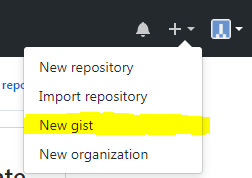
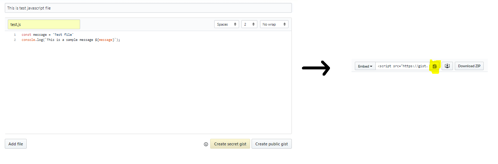

Introduction
If you have a technical web blog it is common to write a sample snippet of code while explaining a concept. The Most difficult part while inserting code is highlighting a key words and pretty printing (formatting) the code in the web page. There are a lot of Javascript plug-ins to format the code. But all these plug-ins will do what it suppose to do. But the major problem with this approach is we need to include the code in HTML pages. When you want to change or update the code you have to update the web page in hosted web server.
Github introduced a tool called Gist to keep the snippet of code. This is very simple to include the code in web pages with syntax highlighter and pretty print. Use below steps to include Gist code snippet in your web pages.
Navigate to Gist
If you're navigating to Gist for the first time follow below steps. Otherwise, skip to next section.
- Open Github and login with your account
- Click on + sign at right corner of the site and select New gist. This option will take you to new gist page 
Alternatively, you can open the gist page directly and can sign in.
Add snippet
Use below steps to create source file and include in the web page.
- Click on New gist option
- Enter file name with extension. Extension is very important. Gist tool will highlight the syntax and format the code based on extension
- Add your code in code text box
- Once you are done with the code click on Create secret gist or Create public gist button based on your preference
- You can add as many files you want by clicking on Add file button
- Once you click on create gist button, it will create the gist. Copy the embed link. 
- Include the copied embed link in your HTML page wherever you want to display the code. For
example,
<script src="https://gist.github.com/samreddy-patti/31659e4a51c4e069818e670df79598cc.js"></script>
Add single file
It is pretty common to have more than one file for an article. Creating gist for every single file and maintaining these files are very difficult. we can add multiple file in single gist. By default if you add the gist embed URL, you will see all the files. If you want to add a specific file in web page from gist you can pass the file name as parameter.
For example, if you have two files File1.js and File2.js in single gist. Use script tag with File1.js as file parameter